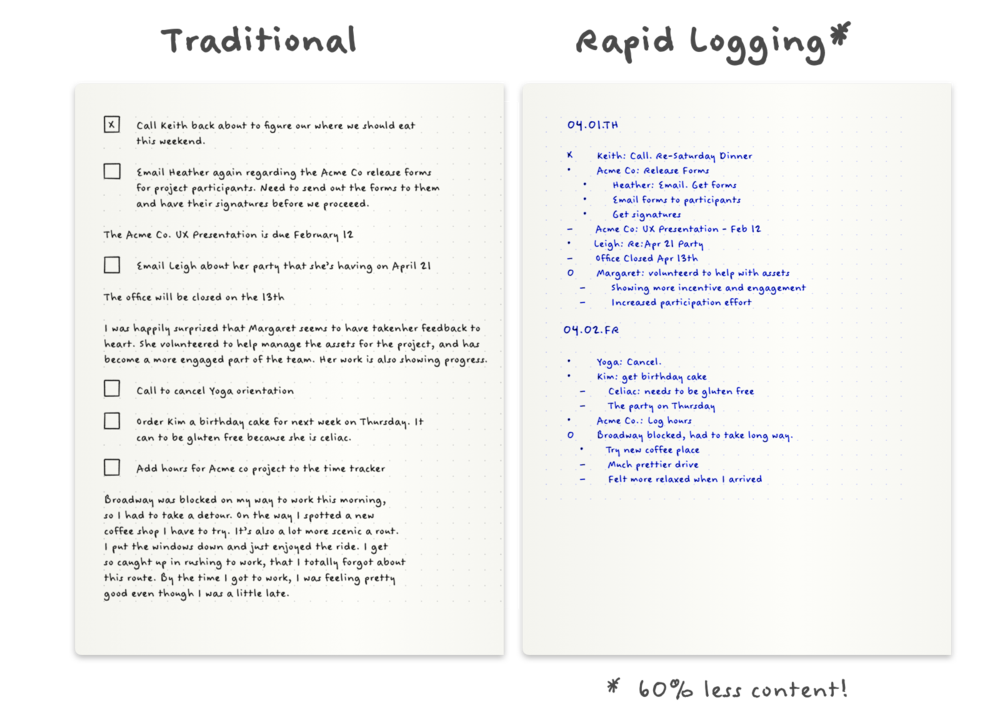
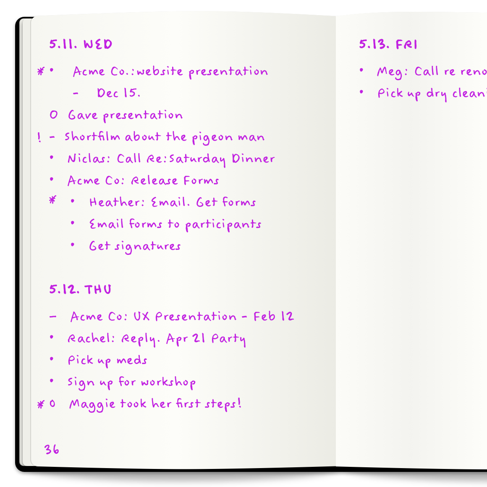

Some challenges we can face as scientist are not just our experiments and analyses, but keeping organized and balancing the hundreds of things we have to do each day. There are lots of tools out there for keeping on top of our todo lists, but if you are like me, you have found it difficult to actually find one that sticks, and actually improves day-to-day life. After trying many different approaches and tools, I’ve really come to like the bullet journal strategy. Because I have found it to be such a game changer, I want to break away from the research heavy topics and share some of my experiences in how I’ve better enabled my science by improving my organization.

Example comparison of a “traditional” todo list compared to a “rapid logging” bullet journal approach, taken from the Bullet Journal website.
As I mentioned above, I’ve tried different organizational approaches including standard todo lists (including PostIt notes) and kanban boards like on GitHub. I had tried Trello for managing tasks, and I’d tried the Apple todo list thing that comes standard on their machines. After going through these various tools, I never actually found something that worked. For a while I was relying on sticky notes, my calendar, flagged emails, and other random techniques to keep track of what I needed to do, and it was kind of a pain. Then I came across the bullet journal.
Getting started with a Bullet Journal is pretty simple, and you can get most of the relevant information online here. This approach to keeping todo lists emphasizes simplicity, as well as modularity, meaning you can use the parts you like and exclude the parts you don’t. I have found the simplicity and modularity to be important.
The main idea behind Bullet Journaling is that you keep a running log of you tasks as bullet points (marked with a simple dot). You can make notes with dashes and events with open cirlces, but most of my bullet journal is tasks. I use notes sparingly and never use the events feature (they just never really worked for me). I also usually nest my notes under their related tasks. I use a star to prioritize tasks, I draw an “X” over a task dot when it is completed, I draw a “" when I need to transfer the task to the next day, and I cross the whole thing out if it has become irelevant. It’s also important to note that I strictly adhere to using only one line for each task, as a way to keep it brief.

Example of what some daily logs could look like. Taken from the Bullet Journal website.
The core of my bullet journal is the “daily log” (you can read about these in the link I provided above). Before diving into my science, I start each day by reviewing my bullet log from the previous day, mark anything that I forgot to mark, and then transfer the incomplete events to my new day (I use the marking rules I mentioned above). I then add to the list as things come up, and mark them as complete when I get them done. I also use the monthy log to mark major events on the calendar, and major tasks that I need to complete (I’ll even include things like paying rent as a task for each month).
Because the bullet journal approach is modular, you can also use a future log for planning tasks far in advance. You can also break your tasks and daily logs into dedicated sections. Honestly I don’t use the future log or the indexing/collection approaches because I have not found them helpful for me. While I only use the daily and monthly logs, I encourage beginners to start with all sorts of different module approaches and seeing what works for you. The cool thing about the bullet journal is the room it leaves for you to find what works best in your life.
One valuable aspect of this method is actually writing the tasks and records down in a notebook by hand. By writing the tasks down by hand, I have found the practice to stick in my mind more clearly and to ultimately being more meaningful. So what notebook should you use? I think the dotted grid notebooks work great, but you can use whatever works best for you. I have used dotted grid notebooks that I got from vendors at conferences (Nanopore has some good ones), but I also like this notebook that you can buy on Amazon.
As the authors of the Bullet Journal method point out, mindfulness is key to the approach. This is not only an exercize in keeping track of our tasks for the day, but is also an opportunity to reflect on what we accomplished yesterday, what we can accomplish today, and what we need to prioritize for tomorrow. I have also found this to be tightly linked to the practice of forcing ourselves to rewrite the tasks we didn’t complete, as we migrate them from the yesterday to today. Sure it takes a couple minutes, but time is well spent on thinking about whether it is important, and what can be done to complete it.
Ultimately I have really found the Bullet Journal method to be a game changer in my life and in my science. I feel more confident in my ability to acomplish tasks because I have them recorded effectively, and the daily exercize in mindfulness really helps me prioritize my tasks and think about what I am spending my time on. Hopefully is was helpful for me to share some of my experiences in this post, and I genuinely hope this helps you both organize your life and reflect on what you are spending your time on.
As always, please leave any questions, comments, or concerns in the comment section below. I always love hearing from readers.
comments powered by Disqus